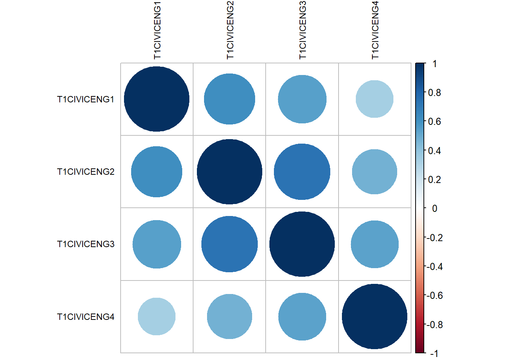
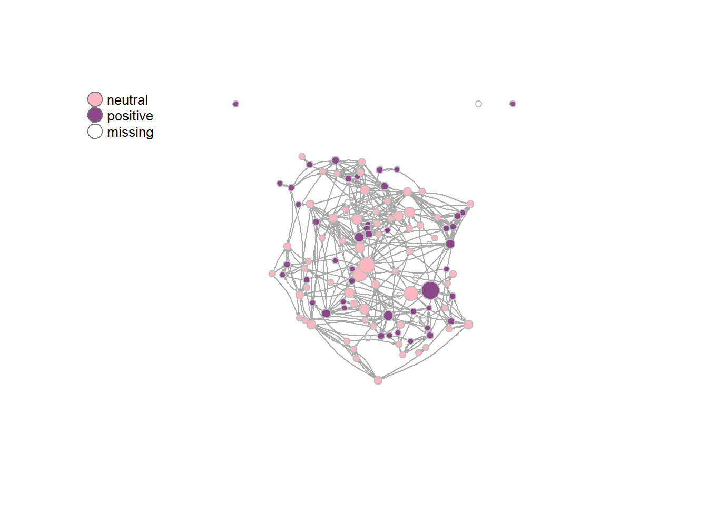
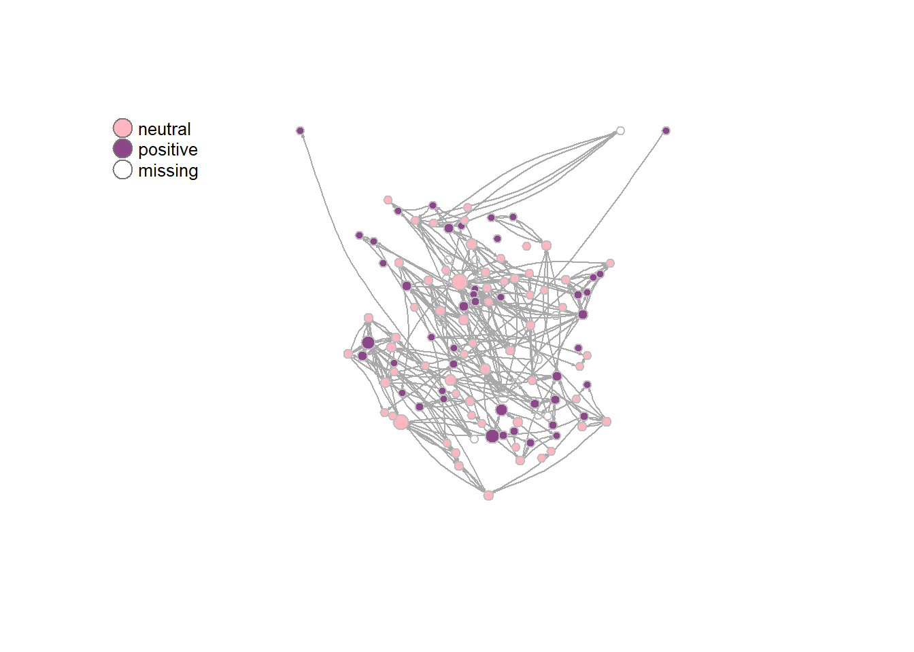

Code final assignment
Lauren
2026-09-25
This webpage combines all relevant code from all the weeks that I used for my final assignment, so it is all easily findable in one place, rather than scattered around in all pages for every separate week.
1 Preparation
Necessary packages
library(ape)
library(sna)
library(knitr)
library(styler)
library(tidyverse)
library(installr)
library(foreign)
library(network)
library(RSiena)
library(RsienaTwoStep)
library(igraph)
library(devtools)
library(corrplot)
library(ltm)
library(psych)Load in data
rm(list = ls())
load("./data/IndividualCharacteristics.RData")
load("./data/NetworkCharacteristics.RData")
load("./data/CivicAttitudes.RData")2 Create network matrices
# view(hanging[[1]])
hanging_df_t1 <- as.data.frame(hanging[[1]][1])
class(hanging_df_t1)## [1] "data.frame"# view(hanging_df_t1)
strong_netw_t1 <- data.matrix(hanging_df_t1)
strong_netw_t1[strong_netw_t1==9]<-NA
class(strong_netw_t1)## [1] "matrix" "array"# view(strong_netw_t1)
hanging_df_t2 <- as.data.frame(hanging[[1]][2])
class(hanging_df_t2)## [1] "data.frame"# view(hanging_df_t2)
strong_netw_t2 <- data.matrix(hanging_df_t2)
strong_netw_t2[strong_netw_t2==9]<-NA
class(strong_netw_t2)## [1] "matrix" "array"# view(strong_netw_t2)3 Create civic engagement attitudes
3.1 Wave 1
3.1.1 Factor analysis
IC_df <- as.data.frame(T1civeng[[1]])
# view(IC_df)
# Sample size = 121 (has to be > 300)
psych::KMO(IC_df) ## Kaiser-Meyer-Olkin factor adequacy
## Call: psych::KMO(r = IC_df)
## Overall MSA = 0.77
## MSA for each item =
## T1CIVICENG1 T1CIVICENG2 T1CIVICENG3 T1CIVICENG4
## 0.83 0.72 0.73 0.85# KMO = .77 (has to be > .5)
det(cor(IC_df, use = "complete.obs")) ## [1] 0.1928592# Determinant = 0.1928592 (> 0.00001)
ltm:: rcor.test(IC_df, use = "complete.obs")##
## T1CIVICENG1 T1CIVICENG2 T1CIVICENG3 T1CIVICENG4
## T1CIVICENG1 ***** 0.612 0.548 0.333
## T1CIVICENG2 <0.001 ***** 0.738 0.474
## T1CIVICENG3 <0.001 <0.001 ***** 0.534
## T1CIVICENG4 <0.001 <0.001 <0.001 *****
##
## upper diagonal part contains correlation coefficient estimates
## lower diagonal part contains corresponding p-values# Only positive correlations (as it should be)
corrplot(cor(IC_df, use="complete.obs"), tl.col='black', tl.cex=.75) 
Factors_w1 <- fa(IC_df, nfactors = 4, rotate = "none", fm = "minres")
Factors_w1## Factor Analysis using method = minres
## Call: fa(r = IC_df, nfactors = 4, rotate = "none", fm = "minres")
## Standardized loadings (pattern matrix) based upon correlation matrix
## MR1 MR2 MR3 MR4 h2 u2 com
## T1CIVICENG1 0.67 -0.23 0.05 0 0.50 0.50 1.2
## T1CIVICENG2 0.87 -0.13 -0.03 0 0.78 0.22 1.0
## T1CIVICENG3 0.86 0.13 -0.04 0 0.76 0.24 1.0
## T1CIVICENG4 0.58 0.26 0.05 0 0.41 0.59 1.4
##
## MR1 MR2 MR3 MR4
## SS loadings 2.30 0.15 0.01 0.00
## Proportion Var 0.57 0.04 0.00 0.00
## Cumulative Var 0.57 0.61 0.61 0.61
## Proportion Explained 0.93 0.06 0.00 0.00
## Cumulative Proportion 0.93 1.00 1.00 1.00
##
## Mean item complexity = 1.2
## Test of the hypothesis that 4 factors are sufficient.
##
## df null model = 6 with the objective function = 1.65 with Chi Square = 193.93
## df of the model are -4 and the objective function was 0
##
## The root mean square of the residuals (RMSR) is 0
## The df corrected root mean square of the residuals is NA
##
## The harmonic n.obs is 108 with the empirical chi square 0 with prob < NA
## The total n.obs was 121 with Likelihood Chi Square = 0 with prob < NA
##
## Tucker Lewis Index of factoring reliability = 1.033
## Fit based upon off diagonal values = 1
## Measures of factor score adequacy
## MR1 MR2 MR3 MR4
## Correlation of (regression) scores with factors 0.94 0.51 0.13 0
## Multiple R square of scores with factors 0.89 0.26 0.02 0
## Minimum correlation of possible factor scores 0.78 -0.47 -0.97 -13.1.2 Reliability analysis
reliability <- psych::alpha(IC_df[, c("T1CIVICENG1","T1CIVICENG2","T1CIVICENG3","T1CIVICENG4")])
reliability##
## Reliability analysis
## Call: psych::alpha(x = IC_df[, c("T1CIVICENG1", "T1CIVICENG2", "T1CIVICENG3",
## "T1CIVICENG4")])
##
## raw_alpha std.alpha G6(smc) average_r S/N ase mean sd median_r
## 0.81 0.82 0.8 0.54 4.7 0.029 5 0.94 0.54
##
## 95% confidence boundaries
## lower alpha upper
## Feldt 0.75 0.81 0.86
## Duhachek 0.75 0.81 0.87
##
## Reliability if an item is dropped:
## raw_alpha std.alpha G6(smc) average_r S/N alpha se var.r med.r
## T1CIVICENG1 0.79 0.81 0.76 0.58 4.2 0.034 0.0192 0.53
## T1CIVICENG2 0.72 0.73 0.66 0.47 2.7 0.045 0.0144 0.53
## T1CIVICENG3 0.71 0.73 0.67 0.47 2.7 0.047 0.0194 0.47
## T1CIVICENG4 0.83 0.84 0.79 0.63 5.2 0.027 0.0094 0.61
##
## Item statistics
## n raw.r std.r r.cor r.drop mean sd
## T1CIVICENG1 109 0.77 0.77 0.65 0.57 4.8 1.23
## T1CIVICENG2 108 0.85 0.87 0.84 0.75 5.5 0.99
## T1CIVICENG3 108 0.86 0.87 0.84 0.74 5.2 1.10
## T1CIVICENG4 108 0.75 0.72 0.57 0.51 4.6 1.35
##
## Non missing response frequency for each item
## 1 2 3 4 5 6 7 miss
## T1CIVICENG1 0.02 0.02 0.07 0.29 0.31 0.21 0.07 0.10
## T1CIVICENG2 0.00 0.00 0.02 0.17 0.30 0.38 0.14 0.11
## T1CIVICENG3 0.00 0.00 0.05 0.26 0.32 0.23 0.14 0.11
## T1CIVICENG4 0.00 0.07 0.11 0.28 0.27 0.18 0.09 0.11# Raw alpha = 0.8096448
# All r.drop are > .3
reliability$alpha.drop ## raw_alpha std.alpha G6(smc) average_r S/N alpha se
## T1CIVICENG1 0.7898278 0.8069117 0.7600961 0.5821131 4.178977 0.03376777
## T1CIVICENG2 0.7184678 0.7282161 0.6620457 0.4717746 2.679393 0.04510940
## T1CIVICENG3 0.7085011 0.7291575 0.6677994 0.4729614 2.692182 0.04688714
## T1CIVICENG4 0.8294051 0.8379094 0.7883594 0.6327755 5.169390 0.02734554
## var.r med.r
## T1CIVICENG1 0.019243874 0.5341844
## T1CIVICENG2 0.014446190 0.5341844
## T1CIVICENG3 0.019424805 0.4737106
## T1CIVICENG4 0.009399533 0.6119581# Removing T1CIVICENG4 results in a small increase of the Cronbach's alpha (0.82 instead of 0.81)3.1.3 Make scale
IC_df$missings <- rowSums(is.na(IC_df))
IC_df$ce_t1 <- ifelse(IC_df$missings <= 1, rowMeans(IC_df[,1:4]), NA)
# View(IC_df)3.1.4 Dichotomise
# Civic attitudes are relatively positive, overall. There is no one who scores lower than 3. For the dichotomisation, I have decided to put the cut-off point at a score of 5, as this is the direct middle of the actually observed scores, and it is the mean score.
IC_df$ce_t1_cat <- cut(IC_df$ce_t1,
breaks = c(0, 5, 7),
labels= c('neutral', 'positive'))
table(IC_df$ce_t1, IC_df$ce_t1_cat)##
## neutral positive
## 3 1 0
## 3.25 1 0
## 3.5 6 0
## 3.75 2 0
## 4 7 0
## 4.25 10 0
## 4.5 15 0
## 4.75 13 0
## 5 7 0
## 5.25 0 13
## 5.5 0 5
## 5.75 0 8
## 6 0 6
## 6.25 0 4
## 6.5 0 2
## 6.75 0 2
## 7 0 63.2 Wave 2
3.2.1 Factor analysis
IC_df2 <- as.data.frame(T2civeng[[1]])
#View(IC_df2)
# Sample size = 121 (has to be > 300)
psych::KMO(IC_df2) ## Kaiser-Meyer-Olkin factor adequacy
## Call: psych::KMO(r = IC_df2)
## Overall MSA = 0.81
## MSA for each item =
## T2CIVICENG1 T2CIVICENG2 T2CIVICENG3 T2CIVICENG4
## 0.77 0.77 0.86 0.90# KMO = .81 (has to be > .5)
det(cor(IC_df2, use = "complete.obs")) ## [1] 0.08336661# Determinant = 0.08336661 (> 0.00001)
rcor.test(IC_df2, use = "complete.obs")##
## T2CIVICENG1 T2CIVICENG2 T2CIVICENG3 T2CIVICENG4
## T2CIVICENG1 ***** 0.818 0.718 0.575
## T2CIVICENG2 <0.001 ***** 0.707 0.604
## T2CIVICENG3 <0.001 <0.001 ***** 0.600
## T2CIVICENG4 <0.001 <0.001 <0.001 *****
##
## upper diagonal part contains correlation coefficient estimates
## lower diagonal part contains corresponding p-values# Only positive correlations (as it should be)
corrplot(cor(IC_df2, use="complete.obs"), tl.col='black', tl.cex=.75) 
Factors_w2 <- fa(IC_df2, nfactors = 4, rotate = "none", fm = "minres")
Factors_w2## Factor Analysis using method = minres
## Call: fa(r = IC_df2, nfactors = 4, rotate = "none", fm = "minres")
## Standardized loadings (pattern matrix) based upon correlation matrix
## MR1 MR2 MR3 MR4 h2 u2 com
## T2CIVICENG1 0.90 -0.19 -0.06 0 0.84 0.16 1.1
## T2CIVICENG2 0.90 -0.12 0.11 0 0.83 0.17 1.1
## T2CIVICENG3 0.82 0.13 -0.11 0 0.71 0.29 1.1
## T2CIVICENG4 0.70 0.24 0.07 0 0.55 0.45 1.3
##
## MR1 MR2 MR3 MR4
## SS loadings 2.77 0.13 0.03 0.00
## Proportion Var 0.69 0.03 0.01 0.00
## Cumulative Var 0.69 0.72 0.73 0.73
## Proportion Explained 0.94 0.04 0.01 0.00
## Cumulative Proportion 0.94 0.99 1.00 1.00
##
## Mean item complexity = 1.1
## Test of the hypothesis that 4 factors are sufficient.
##
## df null model = 6 with the objective function = 2.48 with Chi Square = 292.76
## df of the model are -4 and the objective function was 0
##
## The root mean square of the residuals (RMSR) is 0
## The df corrected root mean square of the residuals is NA
##
## The harmonic n.obs is 105 with the empirical chi square 0 with prob < NA
## The total n.obs was 121 with Likelihood Chi Square = 0 with prob < NA
##
## Tucker Lewis Index of factoring reliability = 1.021
## Fit based upon off diagonal values = 1
## Measures of factor score adequacy
## MR1 MR2 MR3 MR4
## Correlation of (regression) scores with factors 0.96 0.56 0.37 0
## Multiple R square of scores with factors 0.93 0.31 0.13 0
## Minimum correlation of possible factor scores 0.85 -0.38 -0.73 -13.2.2 Reliability analysis
reliability2 <- psych::alpha(IC_df2[, c("T2CIVICENG1","T2CIVICENG2","T2CIVICENG3","T2CIVICENG4")])
reliability2##
## Reliability analysis
## Call: psych::alpha(x = IC_df2[, c("T2CIVICENG1", "T2CIVICENG2", "T2CIVICENG3",
## "T2CIVICENG4")])
##
## raw_alpha std.alpha G6(smc) average_r S/N ase mean sd median_r
## 0.88 0.89 0.87 0.67 8.1 0.017 5.1 0.99 0.66
##
## 95% confidence boundaries
## lower alpha upper
## Feldt 0.85 0.88 0.92
## Duhachek 0.85 0.88 0.92
##
## Reliability if an item is dropped:
## raw_alpha std.alpha G6(smc) average_r S/N alpha se var.r med.r
## T2CIVICENG1 0.83 0.84 0.78 0.64 5.3 0.026 0.0037 0.60
## T2CIVICENG2 0.83 0.84 0.78 0.63 5.1 0.027 0.0058 0.60
## T2CIVICENG3 0.85 0.86 0.82 0.67 6.0 0.025 0.0176 0.60
## T2CIVICENG4 0.90 0.90 0.86 0.75 8.9 0.016 0.0037 0.72
##
## Item statistics
## n raw.r std.r r.cor r.drop mean sd
## T2CIVICENG1 105 0.90 0.90 0.87 0.80 4.9 1.2
## T2CIVICENG2 105 0.89 0.90 0.88 0.82 5.4 1.0
## T2CIVICENG3 105 0.87 0.87 0.81 0.76 5.2 1.1
## T2CIVICENG4 105 0.81 0.80 0.68 0.65 4.8 1.3
##
## Non missing response frequency for each item
## 1 2 3 4 5 6 7 miss
## T2CIVICENG1 0.01 0.03 0.08 0.24 0.31 0.26 0.08 0.13
## T2CIVICENG2 0.00 0.00 0.04 0.15 0.32 0.36 0.12 0.13
## T2CIVICENG3 0.00 0.01 0.02 0.30 0.26 0.32 0.10 0.13
## T2CIVICENG4 0.01 0.02 0.13 0.21 0.29 0.28 0.07 0.13# Raw alpha = 0.8848902
# All r.drop are > .3
reliability2$alpha.drop ## raw_alpha std.alpha G6(smc) average_r S/N alpha se
## T2CIVICENG1 0.8327506 0.8404272 0.7834358 0.6370996 5.266730 0.02635169
## T2CIVICENG2 0.8322631 0.8370127 0.7819057 0.6312434 5.135448 0.02660464
## T2CIVICENG3 0.8476004 0.8566874 0.8227534 0.6658407 5.977754 0.02465003
## T2CIVICENG4 0.8957759 0.8989641 0.8619178 0.7478456 8.897474 0.01604395
## var.r med.r
## T2CIVICENG1 0.003694115 0.6040620
## T2CIVICENG2 0.005832812 0.5999946
## T2CIVICENG3 0.017571187 0.6040620
## T2CIVICENG4 0.003722723 0.7182852# Removing T1CIVICENG4 results in a small increase of the Cronbach's alpha (0.88 instead of 0.90)3.2.3 Make scale
IC_df2$missings <- rowSums(is.na(IC_df2))
IC_df2$ce_t2 <- ifelse(IC_df2$missings <= 1, rowMeans(IC_df2[,1:4]), NA)
# View(IC_df2)3.2.4 Dichotomise
To use the scales for civic attitudes to calculate Moran’s I, and to make plots showing different attitudes, the variable needs to be dichotomised.
# Civic attitudes are relatively positive, overall. There is no one who scores lower than 3. For the dichotomisation, I have decided to put the cut-off point at a score of 5, as this is the direct middle of the actually observed scores, and it is the mean score.
IC_df2$ce_t2_cat <- cut(IC_df2$ce_t2,
breaks = c(0, 5, 7),
labels= c('neutral', 'positive'))
table(IC_df2$ce_t2, IC_df2$ce_t2_cat)##
## neutral positive
## 2.25 1 0
## 3 1 0
## 3.25 1 0
## 3.5 3 0
## 3.75 4 0
## 4 11 0
## 4.25 8 0
## 4.5 8 0
## 4.75 7 0
## 5 11 0
## 5.25 0 10
## 5.5 0 9
## 5.75 0 3
## 6 0 17
## 6.25 0 2
## 6.5 0 2
## 7 0 74 Create gender
5 Descriptive statistics
5.1 Density
# Wave 1
netw1 <- as.network(strong_netw_t1)
network.density(netw1)## [1] 0.02720386# 0.02720386
# Wave 2
netw2 <- as.network(strong_netw_t2)
network.density(netw2)## [1] 0.01859504# 0.018595045.2 Reciprocity
#Wave 1
hangingw1_nona <- na_if(hanging[[1]][[1]], 9)
rowhangingw1 <- rowSums(is.na(hangingw1_nona)) == nrow(hangingw1_nona)
colhangingw1 <- colSums(is.na(hangingw1_nona)) == ncol(hangingw1_nona)
hangingw1_nona[which(rowhangingw1) , ] <- 0
g_strong_t1 <- igraph:: graph_from_adjacency_matrix(hangingw1_nona, mode = "directed")
reciprocity(g_strong_t1, ignore.loops = TRUE, mode = c("default", "ratio"))## [1] 0.4708861# 0.4708861
# Wave 2
hangingw2_nona <- na_if(hanging[[1]][[2]], 9)
rowhangingw2 <- rowSums(is.na(hangingw2_nona)) == nrow(hangingw2_nona)
colhangingw2 <- colSums(is.na(hangingw2_nona)) == ncol(hangingw2_nona)
hangingw2_nona[which(rowhangingw2) , ] <- 0
g_strong_t2 <- igraph:: graph_from_adjacency_matrix(hangingw2_nona, mode = "directed")
reciprocity(g_strong_t2, ignore.loops = TRUE, mode = c("default", "ratio"))## [1] 0.4444444# 0.44444445.3 Dyad configurations
# Wave 1
dyad_census(g_strong_t1)## $mut
## [1] 93
##
## $asym
## [1] 209
##
## $null
## [1] 6958# Mutual ties: 93
# Asymmetrical ties: 209
# No tie: 6958
# Wave 2
dyad_census(g_strong_t2)## $mut
## [1] 60
##
## $asym
## [1] 150
##
## $null
## [1] 7050# Mutual ties: 60
# Asymmetrical ties: 150
# No tie: 70505.4 Triad configurations
# Wave 1
triad_census(g_strong_t1)## [1] 253808 22549 10101 235 243 219 247 254 61 2
## [11] 80 40 54 2 46 39# 003 = 253808
# 012 = 22549
# 102 = 10101
# 021D = 235
# 021U = 243
# 021C = 219
# 111D = 247
# 111U = 254
# 030T = 61
# 030C = 2
# 201 = 80
# 120D = 40
# 120U = 54
# 120C = 2
# 210 = 46
# 300 = 39
# Wave 2
triad_census(g_strong_t2)## [1] 263853 16659 6713 133 125 123 88 132 30 0
## [11] 46 9 39 2 19 9# 003 = 263853
# 012 = 16659
# 102 = 6713
# 021D = 133
# 021U = 125
# 021C = 123
# 111D = 88
# 111U = 132
# 030T = 30
# 030C = 0
# 201 = 46
# 120D = 9
# 120U = 39
# 120C = 2
# 210 = 19
# 300 = 95.5 Transitivity
# Wave 1
transitivity(g_strong_t1)## [1] 0.3641791# 0.3641791
# Wave 2
transitivity(g_strong_t2)## [1] 0.3336766# 0.33367665.6 Path length
# Wave 1
mean((ego_size(g_strong_t1, order = 2, mode = "out") - 1)/vcount(g_strong_t1))## [1] 0.07820504# 0.07820504
# Wave 2
mean((ego_size(g_strong_t2, order = 2, mode = "out") - 1)/vcount(g_strong_t2))## [1] 0.0458302# 0.04583025.7 Segregation
I calculated Moran’s I with row standardisation, because I assume that each node is influenced equally by its neighbourhood, as there is no theoretical reason to assume otherwise specifically for civic attitudes.
# Wave 1
geodistances <- geodist(netw1, count.paths = TRUE)
geodistances <- geodistances$gdist
weights1 <- geodistances == 1 #Means that only direct ties are taken into account for segregation
ape::Moran.I(IC_df$ce_t1, scaled = FALSE, weight = weights1, na.rm = TRUE)## $observed
## [1] -0.01401314
##
## $expected
## [1] -0.008333333
##
## $sd
## [1] 0.07825407
##
## $p.value
## [1] 0.942139# Moran's I t1: -0.01401314, p-value: 0.942139
# Wave 2
geodistances <- geodist(netw2, count.paths = TRUE)
geodistances <- geodistances$gdist
weights1 <- geodistances == 1 #Means that only direct ties are taken into account for segregation
ape::Moran.I(IC_df2$ce_t2, scaled = FALSE, weight = weights1, na.rm = TRUE)## $observed
## [1] -0.0178618
##
## $expected
## [1] -0.008333333
##
## $sd
## [1] 0.09155827
##
## $p.value
## [1] 0.9171138#Moran's I t2: -0.0178618, p-value: 0.91711386 Data visualisation
6.1 Wave 1
Create an igraph object
copy_strong_netw_t1 <- strong_netw_t1
copy_strong_netw_t1[is.na(copy_strong_netw_t1)] <- 0
g_strong_t1 <- igraph:: graph_from_adjacency_matrix(copy_strong_netw_t1, mode = "directed")6.1.1 Node colours based on civil service attitudes
colour <- ifelse(IC_df$ce_t1_cat=='neutral', "lightpink", "orchid4")
graph_CE_t1 <- simplify(g_strong_t1)
# layout <- layout_with_dh(graph_CE_t1)
layout <- readRDS("layout.rds")
V(graph_CE_t1)$size = igraph:: betweenness(graph_CE_t1, normalized = T, directed = T) * 50 + 5
plot_CE_t1 <- plot(graph_CE_t1,
vertex.color = colour,
vertex.frame.color = "gray",
edge.curved = 0.2,
edge.arrow.size = 0.1,
vertex.label = NA,
layout = layout)
legend("topleft", c("neutral", "positive", "missing"), pch = 21, col = "#777777", pt.bg = c("lightpink", "orchid4", "white"), pt.cex = 2,
cex = 0.8, bty = "n", ncol = 1)
6.2 Wave 2
Create an igraph object
copy_strong_netw_t2 <- strong_netw_t2
copy_strong_netw_t2[is.na(copy_strong_netw_t2)] <- 0
g_strong_t2 <- igraph:: graph_from_adjacency_matrix(copy_strong_netw_t2, mode = "directed")6.2.1 Node colours based on civil service attitudes
graph_CE_t2 <- simplify(g_strong_t2)
colour <- ifelse(IC_df$ce_t2_cat=='neutral', "lightpink", "orchid4")
V(graph_CE_t2)$size = igraph:: betweenness(graph_CE_t2, normalized = T, directed = T) * 50 + 5
plot_CE_t2 <- plot(graph_CE_t2,
vertex.color = colour,
vertex.frame.color = "gray",
edge.curved = 0.2,
edge.arrow.size = 0.1,
vertex.label = NA,
layout = layout)
legend("topleft", c("neutral", "positive", "missing"), pch = 21, col = "#777777", pt.bg = c("lightpink", "orchid4", "white"), pt.cex = 2,
cex = 0.8, bty = "n", ncol = 1)
7 RSiena
Putting the behavioural data in a matrix
IC_df <- IC_df %>%
rownames_to_column(var = "id")
IC_df2 <- IC_df2 %>%
rownames_to_column(var = "id")
IC_df <- left_join(IC_df, IC_df2, by=c("id"))
behy <- IC_df %>%
dplyr::select("ce_t1", "ce_t2") %>%
as.matrix()LS0tDQp0aXRsZTogIkNvZGUgZmluYWwgYXNzaWdubWVudCINCmF1dGhvcjogIkxhdXJlbiINCmRhdGU6ICIyMDI2LTA5LTI1Ig0Kb3V0cHV0OiBodG1sX2RvY3VtZW50DQotLS0NCg0KVGhpcyB3ZWJwYWdlIGNvbWJpbmVzIGFsbCByZWxldmFudCBjb2RlIGZyb20gYWxsIHRoZSB3ZWVrcyB0aGF0IEkgdXNlZCBmb3IgbXkgZmluYWwgYXNzaWdubWVudCwgc28gaXQgaXMgYWxsIGVhc2lseSBmaW5kYWJsZSBpbiBvbmUgcGxhY2UsIHJhdGhlciB0aGFuIHNjYXR0ZXJlZCBhcm91bmQgaW4gYWxsIHBhZ2VzIGZvciBldmVyeSBzZXBhcmF0ZSB3ZWVrLg0KDQpgYGB7ciwgZWNobz1GQUxTRSwgaW5jbHVkZT1UUlVFfQ0Ka2xpcHB5OjprbGlwcHkocG9zaXRpb24gPSBjKCd0b3AnLCAncmlnaHQnKSkNCmtsaXBweTo6a2xpcHB5KGNvbG9yID0gJ3B1cnBsZScpDQprbGlwcHk6OmtsaXBweSh0b29sdGlwX21lc3NhZ2UgPSAnQ2xpY2sgdG8gY29weScsIHRvb2x0aXBfc3VjY2VzcyA9ICdEb25lJykNCmBgYA0KDQojIFByZXBhcmF0aW9uDQpOZWNlc3NhcnkgcGFja2FnZXMNCmBgYHtyLCB3YXJuaW5nPUZBTFNFLCBtZXNzYWdlID0gRkFMU0V9DQpsaWJyYXJ5KGFwZSkNCmxpYnJhcnkoc25hKQ0KbGlicmFyeShrbml0cikNCmxpYnJhcnkoc3R5bGVyKQ0KbGlicmFyeSh0aWR5dmVyc2UpDQpsaWJyYXJ5KGluc3RhbGxyKQ0KbGlicmFyeShmb3JlaWduKQ0KbGlicmFyeShuZXR3b3JrKQ0KbGlicmFyeShSU2llbmEpDQpsaWJyYXJ5KFJzaWVuYVR3b1N0ZXApDQpsaWJyYXJ5KGlncmFwaCkNCmxpYnJhcnkoZGV2dG9vbHMpDQpsaWJyYXJ5KGNvcnJwbG90KQ0KbGlicmFyeShsdG0pDQpsaWJyYXJ5KHBzeWNoKQ0KYGBgDQoNCjxicj4NCg0KTG9hZCBpbiBkYXRhDQpgYGB7cn0NCnJtKGxpc3QgPSBscygpKQ0KbG9hZCgiLi9kYXRhL0luZGl2aWR1YWxDaGFyYWN0ZXJpc3RpY3MuUkRhdGEiKQ0KbG9hZCgiLi9kYXRhL05ldHdvcmtDaGFyYWN0ZXJpc3RpY3MuUkRhdGEiKQ0KbG9hZCgiLi9kYXRhL0NpdmljQXR0aXR1ZGVzLlJEYXRhIikNCmBgYA0KDQo8YnI+DQoNCiMgQ3JlYXRlIG5ldHdvcmsgbWF0cmljZXMNCmBgYHtyfQ0KIyB2aWV3KGhhbmdpbmdbWzFdXSkNCmhhbmdpbmdfZGZfdDEgPC0gYXMuZGF0YS5mcmFtZShoYW5naW5nW1sxXV1bMV0pDQpjbGFzcyhoYW5naW5nX2RmX3QxKQ0KIyB2aWV3KGhhbmdpbmdfZGZfdDEpDQpzdHJvbmdfbmV0d190MSA8LSBkYXRhLm1hdHJpeChoYW5naW5nX2RmX3QxKQ0Kc3Ryb25nX25ldHdfdDFbc3Ryb25nX25ldHdfdDE9PTldPC1OQQ0KY2xhc3Moc3Ryb25nX25ldHdfdDEpDQojIHZpZXcoc3Ryb25nX25ldHdfdDEpDQoNCmhhbmdpbmdfZGZfdDIgPC0gYXMuZGF0YS5mcmFtZShoYW5naW5nW1sxXV1bMl0pDQpjbGFzcyhoYW5naW5nX2RmX3QyKQ0KIyB2aWV3KGhhbmdpbmdfZGZfdDIpDQpzdHJvbmdfbmV0d190MiA8LSBkYXRhLm1hdHJpeChoYW5naW5nX2RmX3QyKQ0Kc3Ryb25nX25ldHdfdDJbc3Ryb25nX25ldHdfdDI9PTldPC1OQQ0KY2xhc3Moc3Ryb25nX25ldHdfdDIpDQojIHZpZXcoc3Ryb25nX25ldHdfdDIpDQpgYGANCg0KPGJyPg0KDQojIENyZWF0ZSBjaXZpYyBlbmdhZ2VtZW50IGF0dGl0dWRlcw0KIyMgV2F2ZSAxDQojIyMgRmFjdG9yIGFuYWx5c2lzDQpgYGB7cn0NCklDX2RmIDwtIGFzLmRhdGEuZnJhbWUoVDFjaXZlbmdbWzFdXSkNCiMgdmlldyhJQ19kZikNCg0KIyBTYW1wbGUgc2l6ZSA9IDEyMSAoaGFzIHRvIGJlID4gMzAwKQ0KcHN5Y2g6OktNTyhJQ19kZikgDQojIEtNTyA9IC43NyAoaGFzIHRvIGJlID4gLjUpDQpkZXQoY29yKElDX2RmLCB1c2UgPSAiY29tcGxldGUub2JzIikpIA0KIyBEZXRlcm1pbmFudCA9IDAuMTkyODU5MiAoPiAwLjAwMDAxKQ0KbHRtOjogcmNvci50ZXN0KElDX2RmLCB1c2UgPSAiY29tcGxldGUub2JzIikNCiMgT25seSBwb3NpdGl2ZSBjb3JyZWxhdGlvbnMgKGFzIGl0IHNob3VsZCBiZSkNCg0KY29ycnBsb3QoY29yKElDX2RmLCB1c2U9ImNvbXBsZXRlLm9icyIpLCB0bC5jb2w9J2JsYWNrJywgdGwuY2V4PS43NSkgDQoNCkZhY3RvcnNfdzEgPC0gZmEoSUNfZGYsIG5mYWN0b3JzID0gNCwgcm90YXRlID0gIm5vbmUiLCBmbSA9ICJtaW5yZXMiKQ0KRmFjdG9yc193MQ0KYGBgDQojIyMgUmVsaWFiaWxpdHkgYW5hbHlzaXMNCmBgYHtyfQ0KcmVsaWFiaWxpdHkgPC0gcHN5Y2g6OmFscGhhKElDX2RmWywgYygiVDFDSVZJQ0VORzEiLCJUMUNJVklDRU5HMiIsIlQxQ0lWSUNFTkczIiwiVDFDSVZJQ0VORzQiKV0pDQpyZWxpYWJpbGl0eQ0KIyBSYXcgYWxwaGEgPSAwLjgwOTY0NDgNCiMgQWxsIHIuZHJvcCBhcmUgPiAuMw0KDQpyZWxpYWJpbGl0eSRhbHBoYS5kcm9wIA0KIyBSZW1vdmluZyBUMUNJVklDRU5HNCByZXN1bHRzIGluIGEgc21hbGwgaW5jcmVhc2Ugb2YgdGhlIENyb25iYWNoJ3MgYWxwaGEgKDAuODIgaW5zdGVhZCBvZiAwLjgxKQ0KYGBgDQoNCiMjIyBNYWtlIHNjYWxlDQpgYGB7cn0NCklDX2RmJG1pc3NpbmdzIDwtIHJvd1N1bXMoaXMubmEoSUNfZGYpKQ0KDQpJQ19kZiRjZV90MSA8LSBpZmVsc2UoSUNfZGYkbWlzc2luZ3MgPD0gMSwgcm93TWVhbnMoSUNfZGZbLDE6NF0pLCBOQSkNCg0KIyBWaWV3KElDX2RmKQ0KYGBgDQoNCjxicj4NCg0KIyMjIERpY2hvdG9taXNlDQpgYGB7cn0NCiMgQ2l2aWMgYXR0aXR1ZGVzIGFyZSByZWxhdGl2ZWx5IHBvc2l0aXZlLCBvdmVyYWxsLiBUaGVyZSBpcyBubyBvbmUgd2hvIHNjb3JlcyBsb3dlciB0aGFuIDMuIEZvciB0aGUgZGljaG90b21pc2F0aW9uLCBJIGhhdmUgZGVjaWRlZCB0byBwdXQgdGhlIGN1dC1vZmYgcG9pbnQgYXQgYSBzY29yZSBvZiA1LCBhcyB0aGlzIGlzIHRoZSBkaXJlY3QgbWlkZGxlIG9mIHRoZSBhY3R1YWxseSBvYnNlcnZlZCBzY29yZXMsIGFuZCBpdCBpcyB0aGUgbWVhbiBzY29yZS4gDQoNCklDX2RmJGNlX3QxX2NhdCA8LSBjdXQoSUNfZGYkY2VfdDEsDQogICAgICAgICAgICAgICAgICAgICAgIGJyZWFrcyA9IGMoMCwgNSwgNyksDQogICAgICAgICAgICAgICAgICAgICAgIGxhYmVscz0gYygnbmV1dHJhbCcsICdwb3NpdGl2ZScpKQ0KdGFibGUoSUNfZGYkY2VfdDEsIElDX2RmJGNlX3QxX2NhdCkNCmBgYA0KDQo8YnI+DQoNCiMjIFdhdmUgMg0KIyMjIEZhY3RvciBhbmFseXNpcw0KYGBge3J9DQpJQ19kZjIgPC0gYXMuZGF0YS5mcmFtZShUMmNpdmVuZ1tbMV1dKQ0KI1ZpZXcoSUNfZGYyKQ0KDQojIFNhbXBsZSBzaXplID0gMTIxIChoYXMgdG8gYmUgPiAzMDApDQpwc3ljaDo6S01PKElDX2RmMikgDQojIEtNTyA9IC44MSAoaGFzIHRvIGJlID4gLjUpDQpkZXQoY29yKElDX2RmMiwgdXNlID0gImNvbXBsZXRlLm9icyIpKSANCiMgRGV0ZXJtaW5hbnQgPSAwLjA4MzM2NjYxICg+IDAuMDAwMDEpDQpyY29yLnRlc3QoSUNfZGYyLCB1c2UgPSAiY29tcGxldGUub2JzIikNCiMgT25seSBwb3NpdGl2ZSBjb3JyZWxhdGlvbnMgKGFzIGl0IHNob3VsZCBiZSkNCg0KY29ycnBsb3QoY29yKElDX2RmMiwgdXNlPSJjb21wbGV0ZS5vYnMiKSwgdGwuY29sPSdibGFjaycsIHRsLmNleD0uNzUpIA0KDQpGYWN0b3JzX3cyIDwtIGZhKElDX2RmMiwgbmZhY3RvcnMgPSA0LCByb3RhdGUgPSAibm9uZSIsIGZtID0gIm1pbnJlcyIpDQpGYWN0b3JzX3cyDQpgYGANCg0KIyMjIFJlbGlhYmlsaXR5IGFuYWx5c2lzDQpgYGB7cn0NCnJlbGlhYmlsaXR5MiA8LSBwc3ljaDo6YWxwaGEoSUNfZGYyWywgYygiVDJDSVZJQ0VORzEiLCJUMkNJVklDRU5HMiIsIlQyQ0lWSUNFTkczIiwiVDJDSVZJQ0VORzQiKV0pDQpyZWxpYWJpbGl0eTINCiMgUmF3IGFscGhhID0gMC44ODQ4OTAyDQojIEFsbCByLmRyb3AgYXJlID4gLjMNCg0KcmVsaWFiaWxpdHkyJGFscGhhLmRyb3AgDQojIFJlbW92aW5nIFQxQ0lWSUNFTkc0IHJlc3VsdHMgaW4gYSBzbWFsbCBpbmNyZWFzZSBvZiB0aGUgQ3JvbmJhY2gncyBhbHBoYSAoMC44OCBpbnN0ZWFkIG9mIDAuOTApDQpgYGANCg0KIyMjIE1ha2Ugc2NhbGUNCmBgYHtyfQ0KSUNfZGYyJG1pc3NpbmdzIDwtIHJvd1N1bXMoaXMubmEoSUNfZGYyKSkNCg0KSUNfZGYyJGNlX3QyIDwtIGlmZWxzZShJQ19kZjIkbWlzc2luZ3MgPD0gMSwgcm93TWVhbnMoSUNfZGYyWywxOjRdKSwgTkEpDQoNCiMgVmlldyhJQ19kZjIpDQpgYGANCg0KPGJyPg0KDQojIyMgRGljaG90b21pc2UNClRvIHVzZSB0aGUgc2NhbGVzIGZvciBjaXZpYyBhdHRpdHVkZXMgdG8gY2FsY3VsYXRlIE1vcmFuJ3MgSSwgYW5kIHRvIG1ha2UgcGxvdHMgc2hvd2luZyBkaWZmZXJlbnQgYXR0aXR1ZGVzLCB0aGUgdmFyaWFibGUgbmVlZHMgdG8gYmUgZGljaG90b21pc2VkLg0KDQpgYGB7cn0NCiMgQ2l2aWMgYXR0aXR1ZGVzIGFyZSByZWxhdGl2ZWx5IHBvc2l0aXZlLCBvdmVyYWxsLiBUaGVyZSBpcyBubyBvbmUgd2hvIHNjb3JlcyBsb3dlciB0aGFuIDMuIEZvciB0aGUgZGljaG90b21pc2F0aW9uLCBJIGhhdmUgZGVjaWRlZCB0byBwdXQgdGhlIGN1dC1vZmYgcG9pbnQgYXQgYSBzY29yZSBvZiA1LCBhcyB0aGlzIGlzIHRoZSBkaXJlY3QgbWlkZGxlIG9mIHRoZSBhY3R1YWxseSBvYnNlcnZlZCBzY29yZXMsIGFuZCBpdCBpcyB0aGUgbWVhbiBzY29yZS4gDQpJQ19kZjIkY2VfdDJfY2F0IDwtIGN1dChJQ19kZjIkY2VfdDIsDQogICAgICAgICAgICAgICAgICAgICAgIGJyZWFrcyA9IGMoMCwgNSwgNyksDQogICAgICAgICAgICAgICAgICAgICAgIGxhYmVscz0gYygnbmV1dHJhbCcsICdwb3NpdGl2ZScpKQ0KdGFibGUoSUNfZGYyJGNlX3QyLCBJQ19kZjIkY2VfdDJfY2F0KQ0KYGBgDQoNCjxicj4NCg0KIyBDcmVhdGUgZ2VuZGVyDQoNCg0KIyBEZXNjcmlwdGl2ZSBzdGF0aXN0aWNzDQojIyBEZW5zaXR5DQpgYGB7cn0NCiMgV2F2ZSAxDQpuZXR3MSA8LSBhcy5uZXR3b3JrKHN0cm9uZ19uZXR3X3QxKQ0KbmV0d29yay5kZW5zaXR5KG5ldHcxKQ0KIyAwLjAyNzIwMzg2DQoNCiMgV2F2ZSAyDQpuZXR3MiA8LSBhcy5uZXR3b3JrKHN0cm9uZ19uZXR3X3QyKQ0KbmV0d29yay5kZW5zaXR5KG5ldHcyKQ0KIyAwLjAxODU5NTA0DQpgYGANCg0KPGJyPg0KDQojIyBSZWNpcHJvY2l0eQ0KYGBge3J9DQojV2F2ZSAxDQpoYW5naW5ndzFfbm9uYSA8LSBuYV9pZihoYW5naW5nW1sxXV1bWzFdXSwgOSkNCnJvd2hhbmdpbmd3MSA8LSByb3dTdW1zKGlzLm5hKGhhbmdpbmd3MV9ub25hKSkgPT0gbnJvdyhoYW5naW5ndzFfbm9uYSkNCmNvbGhhbmdpbmd3MSA8LSBjb2xTdW1zKGlzLm5hKGhhbmdpbmd3MV9ub25hKSkgPT0gbmNvbChoYW5naW5ndzFfbm9uYSkNCmhhbmdpbmd3MV9ub25hW3doaWNoKHJvd2hhbmdpbmd3MSkgLCBdIDwtIDANCg0KZ19zdHJvbmdfdDEgPC0gaWdyYXBoOjogZ3JhcGhfZnJvbV9hZGphY2VuY3lfbWF0cml4KGhhbmdpbmd3MV9ub25hLCBtb2RlID0gImRpcmVjdGVkIikNCg0KcmVjaXByb2NpdHkoZ19zdHJvbmdfdDEsIGlnbm9yZS5sb29wcyA9IFRSVUUsIG1vZGUgPSBjKCJkZWZhdWx0IiwgInJhdGlvIikpDQojIDAuNDcwODg2MQ0KDQojIFdhdmUgMg0KaGFuZ2luZ3cyX25vbmEgPC0gbmFfaWYoaGFuZ2luZ1tbMV1dW1syXV0sIDkpDQpyb3doYW5naW5ndzIgPC0gcm93U3Vtcyhpcy5uYShoYW5naW5ndzJfbm9uYSkpID09IG5yb3coaGFuZ2luZ3cyX25vbmEpDQpjb2xoYW5naW5ndzIgPC0gY29sU3Vtcyhpcy5uYShoYW5naW5ndzJfbm9uYSkpID09IG5jb2woaGFuZ2luZ3cyX25vbmEpDQpoYW5naW5ndzJfbm9uYVt3aGljaChyb3doYW5naW5ndzIpICwgXSA8LSAwDQoNCmdfc3Ryb25nX3QyIDwtIGlncmFwaDo6IGdyYXBoX2Zyb21fYWRqYWNlbmN5X21hdHJpeChoYW5naW5ndzJfbm9uYSwgbW9kZSA9ICJkaXJlY3RlZCIpDQoNCnJlY2lwcm9jaXR5KGdfc3Ryb25nX3QyLCBpZ25vcmUubG9vcHMgPSBUUlVFLCBtb2RlID0gYygiZGVmYXVsdCIsICJyYXRpbyIpKQ0KIyAwLjQ0NDQ0NDQNCmBgYA0KDQo8YnI+DQoNCiMjIER5YWQgY29uZmlndXJhdGlvbnMNCmBgYHtyfQ0KIyBXYXZlIDENCmR5YWRfY2Vuc3VzKGdfc3Ryb25nX3QxKQ0KIyBNdXR1YWwgdGllczogOTMNCiMgQXN5bW1ldHJpY2FsIHRpZXM6IDIwOQ0KIyBObyB0aWU6IDY5NTgNCg0KIyBXYXZlIDINCmR5YWRfY2Vuc3VzKGdfc3Ryb25nX3QyKQ0KIyBNdXR1YWwgdGllczogNjANCiMgQXN5bW1ldHJpY2FsIHRpZXM6IDE1MA0KIyBObyB0aWU6IDcwNTANCmBgYA0KDQo8YnI+DQoNCiMjIFRyaWFkIGNvbmZpZ3VyYXRpb25zDQpgYGB7cn0NCiMgV2F2ZSAxDQp0cmlhZF9jZW5zdXMoZ19zdHJvbmdfdDEpDQojIDAwMyA9IDI1MzgwOA0KIyAwMTIgPSAyMjU0OQ0KIyAxMDIgPSAxMDEwMQ0KIyAwMjFEID0gMjM1DQojIDAyMVUgPSAyNDMNCiMgMDIxQyA9IDIxOQ0KIyAxMTFEID0gMjQ3DQojIDExMVUgPSAyNTQNCiMgMDMwVCA9IDYxDQojIDAzMEMgPSAyDQojIDIwMSA9IDgwDQojIDEyMEQgPSA0MA0KIyAxMjBVID0gNTQNCiMgMTIwQyA9IDINCiMgMjEwID0gNDYNCiMgMzAwID0gMzkNCg0KIyBXYXZlIDINCnRyaWFkX2NlbnN1cyhnX3N0cm9uZ190MikNCiMgMDAzID0gMjYzODUzDQojIDAxMiA9IDE2NjU5DQojIDEwMiA9IDY3MTMNCiMgMDIxRCA9IDEzMw0KIyAwMjFVID0gMTI1DQojIDAyMUMgPSAxMjMNCiMgMTExRCA9IDg4DQojIDExMVUgPSAxMzINCiMgMDMwVCA9IDMwDQojIDAzMEMgPSAwDQojIDIwMSA9IDQ2DQojIDEyMEQgPSA5DQojIDEyMFUgPSAzOQ0KIyAxMjBDID0gMg0KIyAyMTAgPSAxOQ0KIyAzMDAgPSA5DQpgYGANCg0KPGJyPg0KDQojIyBUcmFuc2l0aXZpdHkNCmBgYHtyfQ0KIyBXYXZlIDENCnRyYW5zaXRpdml0eShnX3N0cm9uZ190MSkNCiMgMC4zNjQxNzkxDQoNCiMgV2F2ZSAyDQp0cmFuc2l0aXZpdHkoZ19zdHJvbmdfdDIpDQojIDAuMzMzNjc2Ng0KYGBgDQoNCjxicj4NCg0KIyMgUGF0aCBsZW5ndGgNCmBgYHtyfQ0KIyBXYXZlIDENCm1lYW4oKGVnb19zaXplKGdfc3Ryb25nX3QxLCBvcmRlciA9IDIsIG1vZGUgPSAib3V0IikgLSAxKS92Y291bnQoZ19zdHJvbmdfdDEpKQ0KIyAwLjA3ODIwNTA0DQoNCiMgV2F2ZSAyDQptZWFuKChlZ29fc2l6ZShnX3N0cm9uZ190Miwgb3JkZXIgPSAyLCBtb2RlID0gIm91dCIpIC0gMSkvdmNvdW50KGdfc3Ryb25nX3QyKSkNCiMgMC4wNDU4MzAyDQpgYGANCg0KPGJyPg0KDQojIyBTZWdyZWdhdGlvbg0KSSBjYWxjdWxhdGVkIE1vcmFuJ3MgSSB3aXRoIHJvdyBzdGFuZGFyZGlzYXRpb24sIGJlY2F1c2UgSSBhc3N1bWUgdGhhdCBlYWNoIG5vZGUgaXMgaW5mbHVlbmNlZCBlcXVhbGx5IGJ5IGl0cyBuZWlnaGJvdXJob29kLCBhcyB0aGVyZSBpcyBubyB0aGVvcmV0aWNhbCByZWFzb24gdG8gYXNzdW1lIG90aGVyd2lzZSBzcGVjaWZpY2FsbHkgZm9yIGNpdmljIGF0dGl0dWRlcy4gDQpgYGB7cn0NCiMgV2F2ZSAxDQpnZW9kaXN0YW5jZXMgPC0gZ2VvZGlzdChuZXR3MSwgY291bnQucGF0aHMgPSBUUlVFKQ0KZ2VvZGlzdGFuY2VzIDwtIGdlb2Rpc3RhbmNlcyRnZGlzdA0KDQp3ZWlnaHRzMSA8LSBnZW9kaXN0YW5jZXMgPT0gMSAjTWVhbnMgdGhhdCBvbmx5IGRpcmVjdCB0aWVzIGFyZSB0YWtlbiBpbnRvIGFjY291bnQgZm9yIHNlZ3JlZ2F0aW9uDQphcGU6Ok1vcmFuLkkoSUNfZGYkY2VfdDEsIHNjYWxlZCA9IEZBTFNFLCB3ZWlnaHQgPSB3ZWlnaHRzMSwgbmEucm0gPSBUUlVFKQ0KDQojIE1vcmFuJ3MgSSB0MTogLTAuMDE0MDEzMTQsIHAtdmFsdWU6IDAuOTQyMTM5DQoNCiMgV2F2ZSAyDQpnZW9kaXN0YW5jZXMgPC0gZ2VvZGlzdChuZXR3MiwgY291bnQucGF0aHMgPSBUUlVFKQ0KZ2VvZGlzdGFuY2VzIDwtIGdlb2Rpc3RhbmNlcyRnZGlzdA0KDQp3ZWlnaHRzMSA8LSBnZW9kaXN0YW5jZXMgPT0gMSAjTWVhbnMgdGhhdCBvbmx5IGRpcmVjdCB0aWVzIGFyZSB0YWtlbiBpbnRvIGFjY291bnQgZm9yIHNlZ3JlZ2F0aW9uDQphcGU6Ok1vcmFuLkkoSUNfZGYyJGNlX3QyLCBzY2FsZWQgPSBGQUxTRSwgd2VpZ2h0ID0gd2VpZ2h0czEsIG5hLnJtID0gVFJVRSkNCg0KI01vcmFuJ3MgSSB0MjogLTAuMDE3ODYxOCwgcC12YWx1ZTogMC45MTcxMTM4DQpgYGANCg0KPGJyPg0KDQojIERhdGEgdmlzdWFsaXNhdGlvbg0KIyMgV2F2ZSAxDQpDcmVhdGUgYW4gaWdyYXBoIG9iamVjdA0KYGBge3J9DQpjb3B5X3N0cm9uZ19uZXR3X3QxIDwtIHN0cm9uZ19uZXR3X3QxDQpjb3B5X3N0cm9uZ19uZXR3X3QxW2lzLm5hKGNvcHlfc3Ryb25nX25ldHdfdDEpXSA8LSAwIA0KDQpnX3N0cm9uZ190MSA8LSBpZ3JhcGg6OiBncmFwaF9mcm9tX2FkamFjZW5jeV9tYXRyaXgoY29weV9zdHJvbmdfbmV0d190MSwgbW9kZSA9ICJkaXJlY3RlZCIpDQpgYGANCg0KPGJyPg0KDQojIyMgTm9kZSBjb2xvdXJzIGJhc2VkIG9uIGNpdmlsIHNlcnZpY2UgYXR0aXR1ZGVzDQpgYGB7cn0NCmNvbG91ciA8LSBpZmVsc2UoSUNfZGYkY2VfdDFfY2F0PT0nbmV1dHJhbCcsICJsaWdodHBpbmsiLCAib3JjaGlkNCIpDQpncmFwaF9DRV90MSA8LSBzaW1wbGlmeShnX3N0cm9uZ190MSkNCg0KIyBsYXlvdXQgPC0gbGF5b3V0X3dpdGhfZGgoZ3JhcGhfQ0VfdDEpDQpsYXlvdXQgPC0gcmVhZFJEUygibGF5b3V0LnJkcyIpDQoNClYoZ3JhcGhfQ0VfdDEpJHNpemUgPSBpZ3JhcGg6OiBiZXR3ZWVubmVzcyhncmFwaF9DRV90MSwgbm9ybWFsaXplZCA9IFQsIGRpcmVjdGVkID0gVCkgKiA1MCArIDUNCnBsb3RfQ0VfdDEgPC0gcGxvdChncmFwaF9DRV90MSwNCiAgICAgdmVydGV4LmNvbG9yID0gY29sb3VyLA0KICAgICB2ZXJ0ZXguZnJhbWUuY29sb3IgPSAiZ3JheSIsDQogICAgIGVkZ2UuY3VydmVkID0gMC4yLCANCiAgICAgZWRnZS5hcnJvdy5zaXplID0gMC4xLA0KICAgICB2ZXJ0ZXgubGFiZWwgPSBOQSwNCiAgICAgbGF5b3V0ID0gbGF5b3V0KQ0KbGVnZW5kKCJ0b3BsZWZ0IiwgYygibmV1dHJhbCIsICJwb3NpdGl2ZSIsICJtaXNzaW5nIiksIHBjaCA9IDIxLCBjb2wgPSAiIzc3Nzc3NyIsIHB0LmJnID0gYygibGlnaHRwaW5rIiwgIm9yY2hpZDQiLCAid2hpdGUiKSwgcHQuY2V4ID0gMiwNCiAgICBjZXggPSAwLjgsIGJ0eSA9ICJuIiwgbmNvbCA9IDEpDQpgYGANCg0KPGJyPg0KDQojIyBXYXZlIDINCkNyZWF0ZSBhbiBpZ3JhcGggb2JqZWN0DQpgYGB7cn0NCmNvcHlfc3Ryb25nX25ldHdfdDIgPC0gc3Ryb25nX25ldHdfdDINCmNvcHlfc3Ryb25nX25ldHdfdDJbaXMubmEoY29weV9zdHJvbmdfbmV0d190MildIDwtIDAgDQoNCmdfc3Ryb25nX3QyIDwtIGlncmFwaDo6IGdyYXBoX2Zyb21fYWRqYWNlbmN5X21hdHJpeChjb3B5X3N0cm9uZ19uZXR3X3QyLCBtb2RlID0gImRpcmVjdGVkIikNCmBgYA0KDQo8YnI+DQoNCiMjIyBOb2RlIGNvbG91cnMgYmFzZWQgb24gY2l2aWwgc2VydmljZSBhdHRpdHVkZXMNCmBgYHtyfQ0KZ3JhcGhfQ0VfdDIgPC0gc2ltcGxpZnkoZ19zdHJvbmdfdDIpDQoNCmNvbG91ciA8LSBpZmVsc2UoSUNfZGYkY2VfdDJfY2F0PT0nbmV1dHJhbCcsICJsaWdodHBpbmsiLCAib3JjaGlkNCIpDQpWKGdyYXBoX0NFX3QyKSRzaXplID0gaWdyYXBoOjogYmV0d2Vlbm5lc3MoZ3JhcGhfQ0VfdDIsIG5vcm1hbGl6ZWQgPSBULCBkaXJlY3RlZCA9IFQpICogNTAgKyA1DQpwbG90X0NFX3QyIDwtIHBsb3QoZ3JhcGhfQ0VfdDIsDQogICAgIHZlcnRleC5jb2xvciA9IGNvbG91ciwNCiAgICAgdmVydGV4LmZyYW1lLmNvbG9yID0gImdyYXkiLA0KICAgICBlZGdlLmN1cnZlZCA9IDAuMiwgDQogICAgIGVkZ2UuYXJyb3cuc2l6ZSA9IDAuMSwNCiAgICAgdmVydGV4LmxhYmVsID0gTkEsDQogICAgIGxheW91dCA9IGxheW91dCkNCmxlZ2VuZCgidG9wbGVmdCIsIGMoIm5ldXRyYWwiLCAicG9zaXRpdmUiLCAibWlzc2luZyIpLCBwY2ggPSAyMSwgY29sID0gIiM3Nzc3NzciLCBwdC5iZyA9IGMoImxpZ2h0cGluayIsICJvcmNoaWQ0IiwgIndoaXRlIiksIHB0LmNleCA9IDIsDQogICAgY2V4ID0gMC44LCBidHkgPSAibiIsIG5jb2wgPSAxKQ0KYGBgDQoNCjxicj4NCg0KIyBSU2llbmENClB1dHRpbmcgdGhlIGJlaGF2aW91cmFsIGRhdGEgaW4gYSBtYXRyaXgNCmBgYHtyfQ0KSUNfZGYgPC0gSUNfZGYgJT4lIA0KICByb3duYW1lc190b19jb2x1bW4odmFyID0gImlkIikgDQoNCklDX2RmMiA8LSBJQ19kZjIgJT4lIA0KICByb3duYW1lc190b19jb2x1bW4odmFyID0gImlkIikgDQoNCklDX2RmIDwtIGxlZnRfam9pbihJQ19kZiwgSUNfZGYyLCBieT1jKCJpZCIpKQ0KDQpiZWh5IDwtIElDX2RmICU+JSANCiAgZHBseXI6OnNlbGVjdCgiY2VfdDEiLCAiY2VfdDIiKSAlPiUgDQogIGFzLm1hdHJpeCgpDQpgYGANCg0KDQo=